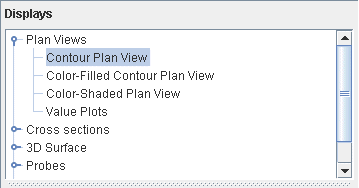
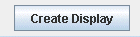

Image 1: Field Selector Window
The Field Selector is used to list the loaded data sources, view their available fields, subset (time and space) the field and create displays.
After choosing some data creating a display is just a couple of steps away:
 |
 |
|  |
 |
 |
|  |
The left panel shows Data Sources, chosen as described in Choosing Data Sources. You can right click on a data source in the list to show a popup menu:

This allows you to Remove the data source, reload its data, change the data source, show its Properties window, etc.
The Save as Quick Link item will save this data
source off as a favorite and make it available in the "Favorite Data
Sources" tab of the Quick Links tab of the Data Explorer. Gridded data has
additional options that allow you to make the grid local, or write a field
mask plugin.
Selecting a data source in the left panel will list the available fields in the Fields tree. This list is usually hierarchical showing different categories of fields (e.g., 2D grids, 3D grids, image sequences, etc.). To see the fields under a particular category click on the toggle icon  .
.
Selecting a field will show the list of displays available in the Displays list and subsetting information (e.g., times, spatial subset).
The "Subsetting" component of the Field Selector allows you to subset the data in both time and space (if possible). If there are times in the data source you are viewing they will be shown in this area. Likewise, if it is possible to do spatial subsetting or decimation a "Spatial Subset" tab will be shown.
Time and spatial subsetting defaults can be applied to the data source itself through the Data Source Properties dialog or the defaults can be overwritten through the Field Selector window.
The Display tree shows a hierarchical list of the available displays for a particular field. Click on the type of display you want from the choices listed in the Displays tree. You can see examples of Display Types in this Users Guide.
You can select two or more displays (different display types) at one time. For an additional display, hold down the CTRL key and click on the second display type desired. Then go ahead and create the display as normal; all selected displays will be made. To make the display click on the button Create display(or double click on the display).
McIDAS-V provides derived parameters -- parameters not provided by the original source data, but made from the source data with computations by McIDAS-V. The intent is to provide commonly used fields such as dewpoint when dewpoint is not provided by the data source, but when it can be derived from source data such as humidity and temperature.
These automatic derived parameters are offered when the required data to compute them are available, based on parameter names.
Since few data sets use the same names for parameters, McIDAS-V keeps of a list of "aliases" or particular parameter names that match with "canonical" names which are generally understood by all McIDAS-V users and which McIDAS-V uses for computations. You can add your special parameter names to the list of aliases. Read the Parameter Alias section in this guide for information on using that facility.
All needed source parameters for one derived parameter must come from one single data source, for example, from one single netCDF file. McIDAS-V attempts to find derived parameters that can be made from data in each data source in the data source panel, but not from all possible combination of data sources. If you had separate files of u and v wind components, for example, the parameter names or aliases will not create Derived wind vectors.
You can create your own formulas using the McIDAS-V Formulas facility. The Formulas data source in the Field Selector is a special data source and lists all of the available end user formulas. You can right-click on the data source to create new formulas and import and export formulas. The formulas are listed in the Fields tree. Right clicking on one of the formulas listed in the Fields tree allows you to edit, copy or evaluate the formula.
You can select a formula just like any other field and create a display from it. However, the formula, when evaluated to create the display, usually needs one or more other data fields to act on. In this case a special Field Selector window is shown that allows the user to select the fields for the formula. (Note: the fields you select here can also be formula fields resulting in further field selection).